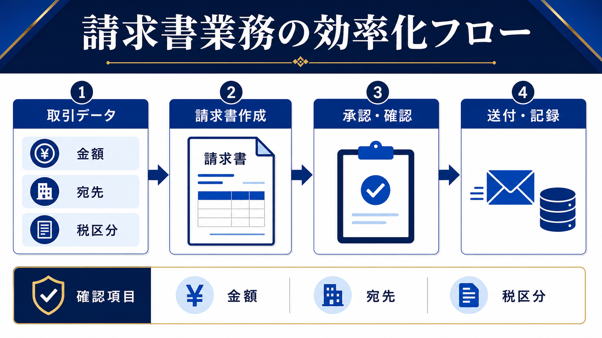

BACK OFFICE / INVOICE OPERATIONS
請求書作成を効率化する方法｜作成・確認・送付・記録をつなげる
請求書の効率化は、PDFを早く作るだけでは終わりません。取引条件を正しく集め、金額と宛先を確認し、送付と入金記録までつなげると、月末の手戻りを減らせます。

- 最初に統一するのは請求書のデザインより、元データと項目の持ち方
- 金額・宛先・税区分・対象期間は自動作成後に必ず照合する
- 作成時間だけでなく、差し戻し・再送・入金確認まで測る
請求書作成のボトルネックは、転記と確認の分断
請求書の作成が遅い会社では、営業の受注情報、納品実績、単価表、宛先情報が別々に管理されていることがあります。その状態で自動化すると、誤った元データを速く帳票へ反映するだけになりかねません。最初に、どの情報がどこにあり、誰が確定するかを見える化します。
| 工程 | 起きやすい詰まり | 見直すポイント |
|---|---|---|
| 取引条件 | 営業メモと契約条件が違う | 確定データの所有者 |
| 作成 | 毎回同じ項目を転記する | 項目名・単価・期間の標準化 |
| 確認 | 担当者が目視で探す | 確認欄と承認者の固定 |
| 送付・記録 | 送付済みや入金状況が追えない | ステータスと期限の一元管理 |
自動化の前に、取引データの入力ルールを決める
請求書の元になる情報は、取引先名、請求先住所、対象期間、品目、数量、単価、税区分、支払期限、担当者です。表記揺れや空欄があると、AIやテンプレートの出力も安定しません。入力者、確定日、変更履歴を決め、請求書へ反映する前の「確定済み」状態を作ります。
集める
受注・納品・契約条件を揃える。
揃える
取引先名、税区分、期限を統一する。
確定する
担当者が請求対象を承認する。
請求書のひな型を整えることも有効ですが、ひな型は入力データの正しさを保証しません。項目ごとの出典と確認者を残しておくと、差し戻しの原因を追えます。
金額・宛先・税区分・対象期間を確認する
自動生成した請求書は、見た目が整っていても内容が正しいとは限りません。特に、前月の金額が残っている、税込・税抜が混ざる、宛先が旧住所のまま、対象期間がずれている、といったミスは送付後の訂正につながります。
- 金額：数量、単価、割引、税計算を元データと照合する。
- 宛先：会社名、部署名、担当者、送付先アドレスを確認する。
- 税区分：取引内容や社内の経理ルールに沿っているか見る。
- 対象期間：納品・役務提供の期間と請求月が一致するか確認する。
- 承認：誰がいつ確認したかを記録してから送付する。
AI・自動化は転記、文面、ステータス更新から入れる
AIは、取引データを請求書の項目へ整理する、送付メールの下書きを作る、未入力欄を洗い出す、送付後のステータスを更新する、といった補助に使えます。銀行口座や会計ソフトとの連携を含める場合は、権限、ログ、失敗時の戻し方を先に決めてください。
顧客情報や請求金額を外部AIへ渡す場合は、サービスの利用条件と社内の情報分類を確認します。入力を匿名化できないなら、社内環境や別の方法を検討し、判断に迷うデータは送らないことが安全です。生成AIの社内利用ルールも合わせて確認してください。
作成時間だけでなく、再作成と入金確認を測る
効率化の効果は、請求書1枚の作成時間だけでは判断しません。月間の請求件数、作成・確認・送付・入金確認の時間、差し戻し件数、再送件数、入金遅れの発見日を導入前後で記録します。想定値と実測値を分け、1か月程度の小さな範囲で比べます。
| 指標 | 記録方法 | 改善の見方 |
|---|---|---|
| 作成時間 | 確定データから完成まで | 転記と整形が短くなったか |
| 確認時間 | 承認依頼から完了まで | 確認箇所が見つけやすいか |
| 差し戻し | 理由別に件数を記録 | 元データとルールを直せるか |
| 入金確認 | 入金状況の更新日 | 未入金の発見が遅れていないか |
不一致が出たら、自動化を止めて元データへ戻す
請求書の効率化で怖いのは、ミスが見つからないまま送付されることです。金額、宛先、対象期間、税区分のいずれかが元データと一致しない場合は、送付せずに保留します。担当者が元データを確定し、修正理由を記録してから再作成します。
- 止める：不一致の請求書を送付待ちに戻す。
- 分ける：入力ミス、ひな型の問題、連携の問題を分類する。
- 直す：原因を元データ・計算式・確認手順のどこかで修正する。
- 再確認：同じ条件で別の担当者が照合する。
自動化後に確認件数が増えた場合も、機能を足す前に入力欄と承認者を見直します。請求書の完成を早めることより、訂正や再送を減らし、取引先との信頼を守れることを優先します。
- IPA「AIの利活用、AIによるDXの推進」（2026-07-13確認）
- 個人情報保護委員会「生成AIサービスの利用に関する注意喚起」（2026-07-13確認）
- 経済産業省「AI事業者ガイドライン」（2026-07-13確認）
よくある質問
請求書をAIに作らせれば確認は不要ですか？
不要にはなりません。金額、宛先、税区分、対象期間、送付先は、元データと照合して人が承認します。
Excel管理からすぐシステム化すべきですか？
まず項目と確認手順を揃え、件数や差し戻しの原因を把握してから判断します。仕組みを変えても入力ルールが曖昧なら、問題が移動するだけです。
請求書の効果測定は何から始めますか？
1か月分の件数、作成時間、確認時間、差し戻し、再送、入金確認にかかった時間を記録し、導入後と同じ条件で比べます。